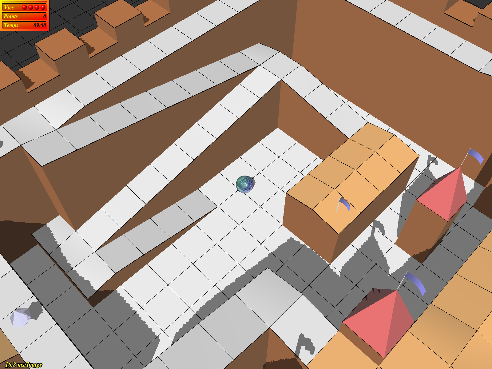

Trackballs is a marble game inspired by the 80s Atari classic Marble Madness.
By steering a marble ball through a labyrinth filled with sharp objects, pools of acid, and other obstacles the player collects points. When the destination is reached you continue on to the next, more difficult level — unless the time runs out.
Unlike Marble Madness the game uses 3D graphics even though the original game had no real use for it. Also the game is fully programmable with a scripting extension (Guile), and includes a level editor with which to easily create new levels.
One of the goals of the game is to provide entertainment for children and adults alike. The main language for the sourcecode and all development of Trackballs is English but the game has been translated a few other languages including Swedish, German, Italian and French.
The latest release of trackballs. The most recent updates (from 2017) are available for Debian and Arch Linux.
The original series of Trackballs releases ran up until about 2007, and was maintained by Mathias Broxvall.
Currently, Trackballs requires SDL >=2.0.0, Guile >=2.0.0, gettext, libz, and OpenGL supporting standard 3.3. If Trackballs doesn't work on your system, please file an issue so that I can resolve the problem.
The repository for the project is located at Github. Contributions of translations, levelsets, and code are welcome! (The code is licensed under the GPL.)The built-in package documentation is also provided here.
